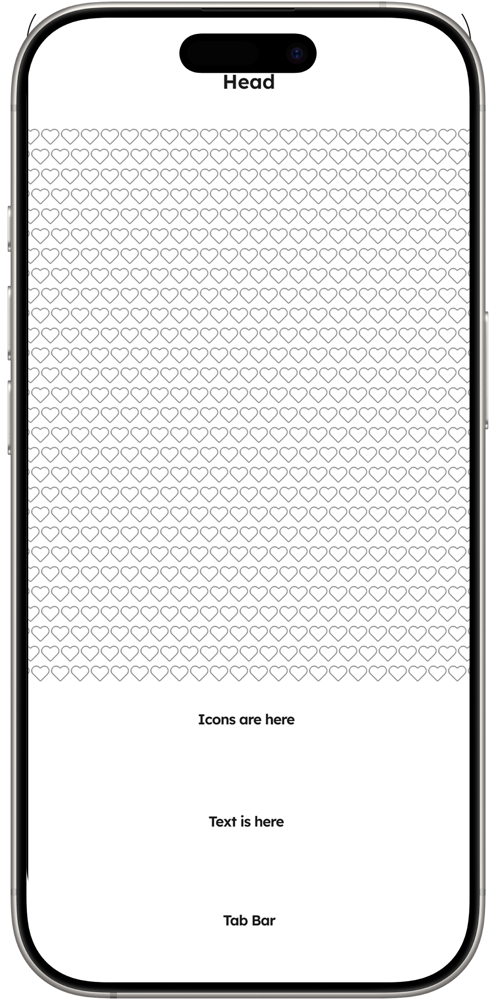
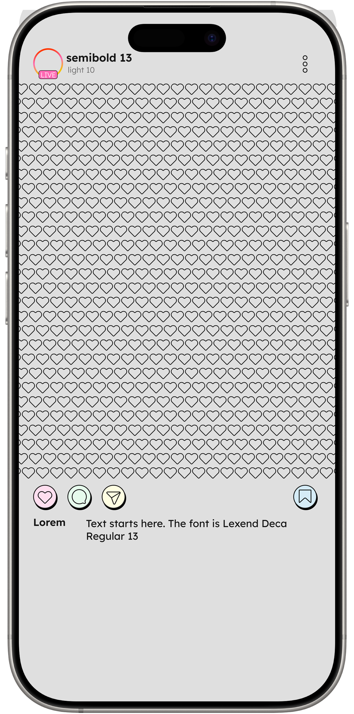

Instagram Redesign
Role: UI Designer
Goal: To apply neobrutalism on Instagram interface design
Timeline: 2 Months, May & October 2025

This was my first attempt at creating an Instagram interface visual.
Layout
This was my first attempt at creating an Instagram interface visual.
The process
began
by measuring each section to establish a clear layout framework.

Neobrutalism emphasizes bold black lines as a defining visual feature.
Lo-Fi Prototype
Neobrutalism emphasizes bold black lines as a defining visual feature.
I applied
shading
to give icons a 3D effect, creating a distinct look that diverges from the original UI.